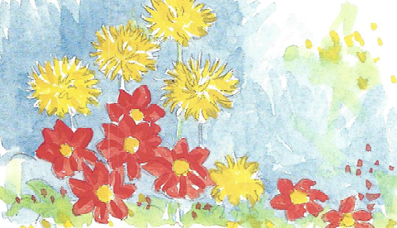
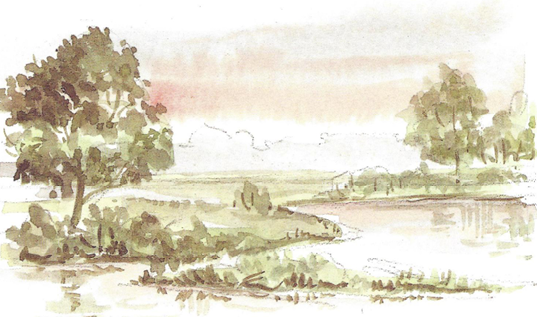
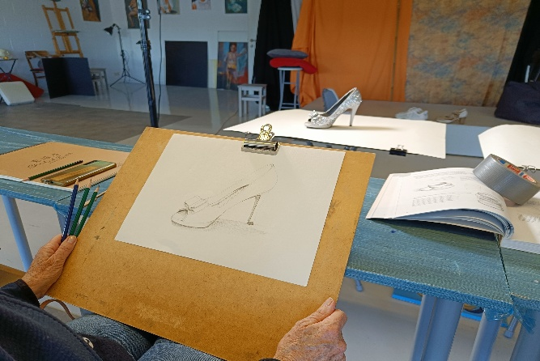
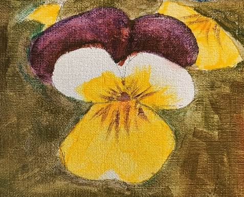
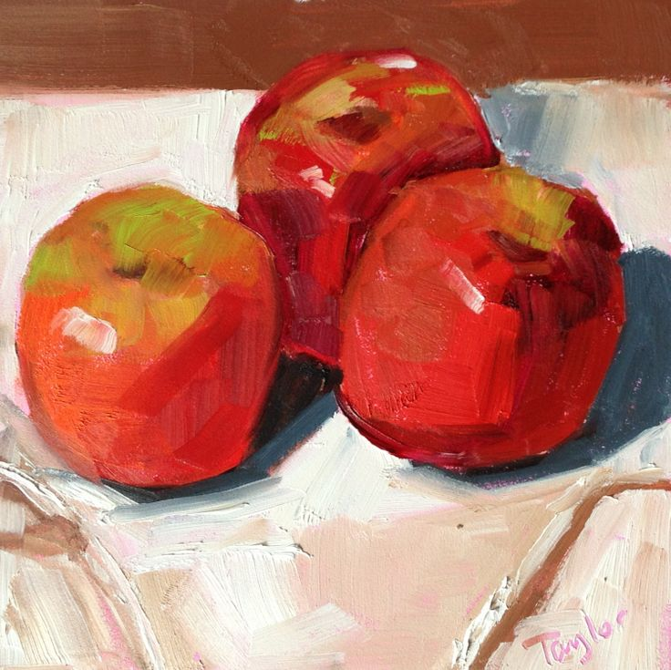

Zomeratelier 2026
Juli–Augustus 2026Nieuw dit jaar! Een portret tekenen dagworkshop (29 juli), een portret schilderen dagworkshop (15 augustus) en een model schilderen met aquarel voormiddag (27 juli).
Workshop aquarel voor beginners
Data: 6, 7 en 8 juli
9u30–12u30
Kennismaking met aquarelleren: materialen, soorten aquarelverf, penselen en aquarelpapier. Technieken: penseelstreken, wassingen, nat-op-droog, droog-op-droog, nat-op-nat. Van licht naar donker, ruimte en diepte, kleur mengen (primaire kleuren, complementaire kleuren, vergrijzen) en toepassen op eenvoudige voorwerpen.
- Mee te brengen: schort, HB potlood, schetspapier en gom
- Overig materiaal inbegrepen
- Inbegrepen: koffie, koekje
Prijs: €120

Aquarel deel 2 (vervolgcursus)
Data: 13, 14 en 15 juli
9u30–12u30
Heb je al de beginnerscursus gevolgd? Dan gaan we verder met kleurenleer (eerst herhaald), wassingen voor achtergronden (lucht, wolken), toonwaarden oefenen en beginnen we aan een eerste landschap of stilleven.
- Materiaal niet inbegrepen
- Mee te brengen: 2 kleine + 2 grotere penselen, acryl (cadmium geel lemon, cadmium geel, cadmium rood, alizarin crimson, ceruleum blauw, french ultramarijn blauw), schort, keukenrol
- Waterbakjes en mengbordjes aanwezig, gouache ook toegestaan
- Inbegrepen: koffie, koekjes
Prijs: €100

Model schilderen/tekenen (3× dezelfde pose)
Juli (donderdag): 9, 16 en 23 juli
Augustus (vrijdag): 7, 21 en 28 augustus
9u30–12u30
Drie sessies met dezelfde pose. Open atelier: zelfstandig aan eigen werk verder werken kan ook.
- Materiaal niet inbegrepen
- Inbegrepen: koffie, koekjes
Prijs: afhankelijk van het aantal sessies, zie inschrijvingsformulier
Model tekenen/schilderen, snelschetsen (geen ervaring nodig)
Juli (zaterdag): 11 en 25 juli
Augustus (zaterdag): 8, 22 en 29 augustus
9u30–12u30
Basisvormen worden eerst uitgelegd, daarna oefenen we in de praktijk. Snelschetsen gevolgd door langere poses. Open atelier: zelfstandig aan eigen werk verder werken kan ook. Ervaren tekenaars en schilders zijn uiteraard ook welkom.
- Materiaal niet inbegrepen
Prijs: afhankelijk van het aantal sessies, zie inschrijvingsformulier
Tekendag voor absolute beginners
Data: woensdag 22 juli
10u–16u (pauze voorzien voor lunch)
Leren tekenen is leren kijken en vooral doen! We helpen je vlot over de "ik-kan-niet-tekenen"-drempel. Lijnvoering, vorm, compositie en gebruik van licht en donker. We werken naar waarneming en ontdekken verschillende materialen zoals grafiet. Hopelijk geeft deze dag je impuls en enthousiasme om na de cursus vrijer te kunnen tekenen. Want leren tekenen is ook: veel oefenen!
- Materiaal inbegrepen
- Inbegrepen: koffie, koekjes
- Meebrengen: lunch
Prijs: €60

Model schilderen met aquarel (voormiddag)
Data: maandag 27 juli
9u30–12u30
Heb je na het modeltekenen zin om ook kleur te geven aan je werk? We starten met een heldere, technische basis: hoe bouw je de aquarel op, hoe werk je met licht en donker, welke kleuren kunnen we gebruiken en hoe creëren we volume. Daarna ga je zelf aan de slag en experimenteer je met waterverf.
- Materiaal niet inbegrepen
- Mee te brengen: 2 kleine + 2 grotere penselen, acryl (cadmium geel lemon, cadmium geel, cadmium rood, alizarin crimson, ceruleum blauw, french ultramarijn blauw), schort, keukenrol
- Waterbakjes en mengbordjes aanwezig, gouache ook toegestaan
- Inbegrepen: koffie, koekjes
Prijs: €60
Portret tekenen (dagworkshop)
Data: woensdag 29 juli
9u30–16u30
Altijd al willen leren hoe je een treffend portret maakt? We starten de dag met een heldere, technische basis: hoe bouw je een portret op, hoe werk je met verschillende aanzichten en hoe zet je een foto correct over op papier. Je krijgt inzicht in verhoudingen, structuur en observatie. Daarna experimenteer je met potlood, houtskool en andere media. De workshop is zowel voor beginners als gevorderden.
We werken met foto's die de lesgever zelf meebrengt.
- Alle materiaal inbegrepen (eigen potloden en schetsboek mogen ook meegebracht worden)
- Inbegrepen: koffie, koekjes
- Meebrengen: lunch
Prijs: €100
Workshop schilderen voor beginners
Data: 3, 4 en 5 augustus
9u30–12u30
Kennismaking met schildermaterialen: soorten verf, penselen en doeken. Onderschildering in een neutrale tint in licht en donker, achtergrond in een donkere kleur. Kleur mengen: primaire kleuren, complementaire kleuren, vergrijzen, kleurcontrasten.
- Inbegrepen: verf, mengpalet, penselen en canvas
- Mee te brengen: schort, oude handdoek, keukenrol, tekenpotlood, gom, schetspapier
- Inbegrepen: koffie, koekjes
Prijs: €120

Schilderen deel 2 (vervolgcursus)
Data: 10, 11 en 12 augustus
9u30–12u30
Herhaling van de beginnerscursus en toepassen van de geleerde technieken aan de hand van een stilleven. Grote vormen schetsen, compositie, schilderij opbouwen in lagen met lichte en donkere toonwaarden.
- Materiaal niet inbegrepen
- Mee te brengen: mengbord, canvas of paneeltje (niet te groot), 2 kleine + 2 grotere penselen, acryl (cadmium geel lemon, cadmium geel, cadmium rood, alizarin crimson, ceruleum blauw, french ultramarijn blauw), schort, keukenrol, oude handdoek, tekenpotlood, gom, schetspapier
- Waterbakjes aanwezig
- Inbegrepen: koffie en koekjes
Prijs: €100

Portret schilderen (dagworkshop)
Data: zaterdag 15 augustus
9u30–16u30
Schilder je graag portretten en wil je eens proeven van een andere aanpak? Werk je graag met acryl maar heb je je nog nooit aan een portret gewaagd? Dan is deze workshop zeker iets voor jou. Beginners zijn zeker ook welkom.
We werken met foto's die de lesgever zelf meebrengt.
- Inbegrepen: koffie, thee
- Meebrengen: lunch
Prijs:
- €120 materiaal inbegrepen (1 canvas 40×50 cm en de verf)
- €100 met eigen materiaal (canvas en verf)
Eigen materiaal meebrengen: acrylverf, penselen, canvas naar keuze. Volgende attributen mag je ook meebrengen als je ze hebt: schuursponsje, kleine ruitenwisser, plantenspuit, ruw borsteltje, oude betaal- of klantenkaarten, paletmesje.